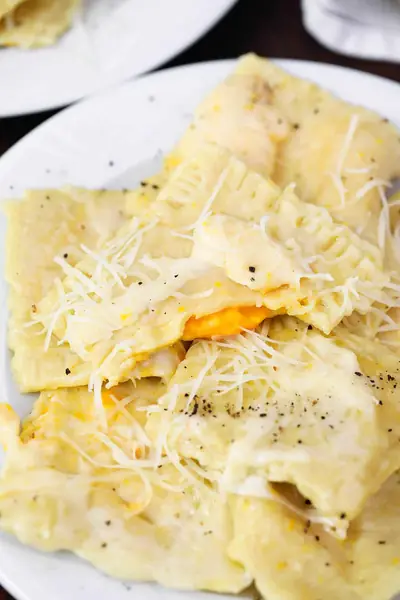

Trader Joe's Butternut Squash Ravioli Recipe

Ingredients
- 1 package Trader Joe's Butternut Squash Triangoli
- 2 tbsp extra virgin olive oil
- ¼ cup fresh grated Parmesan cheese
- ¼ tsp freshly ground black pepper (or to taste)
Steps
- Cook the ravioli according to package directions. About 4 minutes in boiling water. Drain and cool.
- In the same pot that you cooked the ravioli in, heat two tablespoons of olive oil and 1/4 cup of Parmesan cheese over low heat until the cheese is melted in the olive oil. Stir frequently until the cheese is melted and combined with the olive oil (you don't want the cheese to become crispy or hardened!) Alternatively, you can toss the ravioli with the olive oil mixed with 1-2 tbsp of reserved pasta cooking water, and then just top with parmesan cheese.
- Return the cooked ravioli to the pot and toss in the sauce.
- Serve and top with 1 Tbsp Parmesan cheese and freshly ground black pepper to taste.
Recipe by Anjali Shah · The Picky Eater, from The Picky Eater. Saved here for personal use; the original has the full notes, tips and photos. Open original